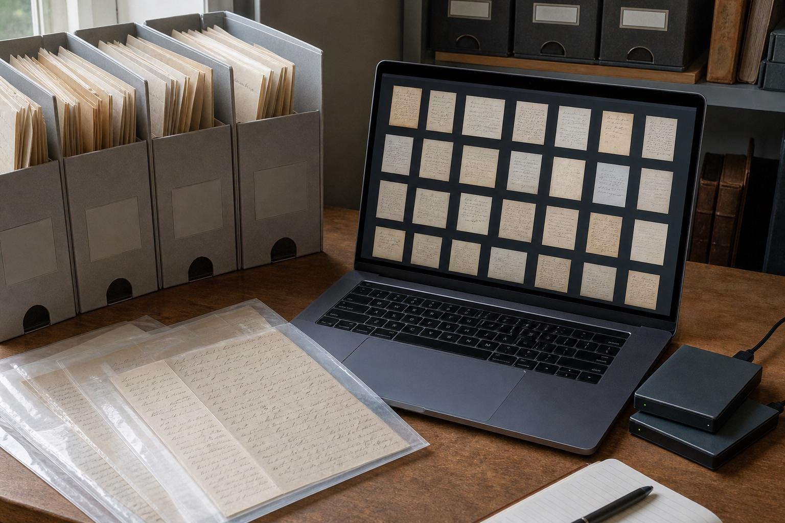

西安手写材料里有复印件，怎样和原始照片对应？
复印件适合快速查看，原始照片更能保留页面和笔画细节。西安站整理模仿笔迹、模仿签名、模仿签字和笔迹鉴定资料时，建议建立对应编号。

复印件适合快速查看，原始照片更能保留页面和笔画细节。西安站整理模仿笔迹、模仿签名、模仿签字和笔迹鉴定资料时，建议建立对应编号。

原件与复印件可观察的信息不同，咨询前先说明持有形式和复制次数。本文从西安实际资料整理角度说明页面、版本与原图的保存方法。

彩色扫描保留墨色与纸色，灰度版本便于阅读，两者应对应同一原页。本文从西安实际资料整理角度说明页面、版本与原图的保存方法。

档案袋外先标明日期、场景与版本，取出后仍能知道每张签名从哪里来。本文从西安实际资料整理角度说明页面、版本与原图的保存方法。
西安站扫描资料新增彩色底稿保存提示，围绕西安模仿笔迹、模仿签名、模仿签字和笔迹鉴定更新服务资料。
西安笔迹鉴定扫描用彩色还是灰度？模仿笔迹图片保存说明，围绕西安模仿笔迹、模仿签名、模仿签字和笔迹鉴定介绍资料准备方法。
围绕模仿笔迹、模仿签名、模仿签字和笔迹鉴定整理实用资料。

介绍服务内容、样本要求、价格因素和办理流程。

介绍签名服务范围、签字样本要求、费用与周期。

介绍笔迹鉴定范围、对比材料、费用周期和常见问题。

介绍手写文件、个人字体、字符数量和交付方式。